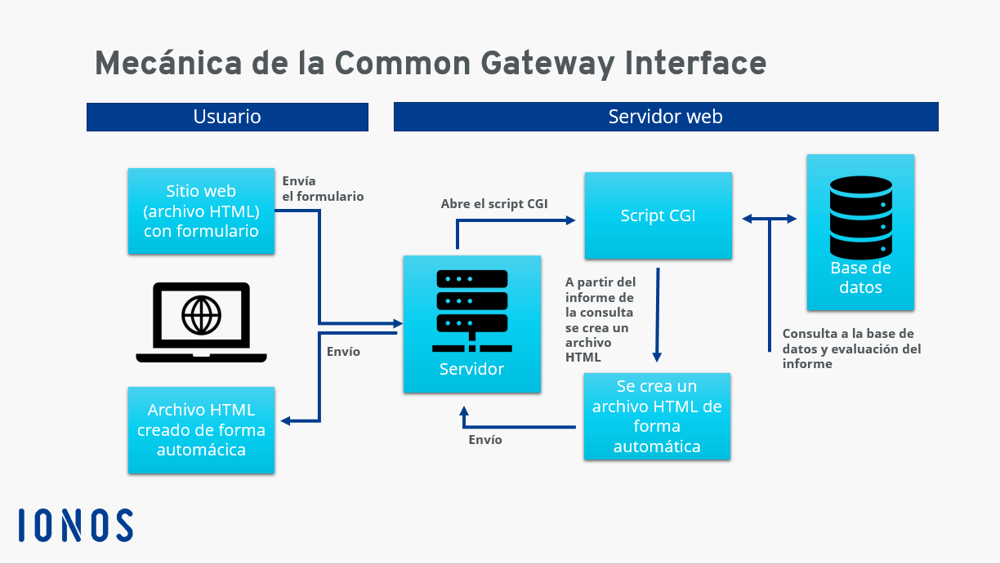

Common Gateway Interface (CGI) o interfaz de entrada común es una interfaz de los servidores web que permite intercambiar datos entre los servidores y
las aplicaciones externas de manera estandarizada. Se encuentra entre las tecnologías de interfaz más antiguas de Internet, aunque su uso sigue muy extendido
en la actualidad. Con el CGI, no es necesario que todo el contenido de la página HTML esté disponible en el servidor, sino que este se genera de forma dinámica
cuando el usuario realiza la solicitud correspondiente a través de la propia página.

Ventajas
El CGI es una forma sencilla y eficaz de generar contenido dinámico en las páginas web. Al mismo tiempo, como las aplicaciones CGI no tienen que almacenarse
en el servidor, no se utilizan recursos innecesariamente. Desde un punto de vista práctico, otra ventaja de Common Gateway Interface es que es compatible con
varios lenguajes de programación y, por lo tanto, puede incorporarse fácilmente a las infraestructuras existentes. Por último, pero no por ello menos importante,
se trata de un estándar gratuito y disponible para todos los desarrolladores en cualquier momento.
Inconvenientes
Uno de los mayores puntos débiles de Common Gateway Interface es que, aunque la carga del servidor se reduce, el tiempo de respuesta de las aplicaciones CGI se alarga
mucho en algunos casos, porque los programas deben volver a ejecutarse con cada nueva solicitud. Especialmente en el caso de las páginas web con mucho tráfico, el hecho
de que los servidores solo suelan admitir una cierta cantidad de aplicaciones CGI y que otras solicitudes entrantes se pongan en espera o, directamente, se rechacen puede
suponer un problema.
Por otra parte, al igual que otras interfaces, Common Gateway Interface puede suponer un riesgo para la seguridad si no se configura un medio de protección adecuado.
En teoría, a través del CGI, los programas externos tienen acceso a todos los datos del servidor web. Por lo tanto, deben establecerse unas restricciones claras para evitar
que los scripts CGI causen daño.
Para seleccionar la estructura que mejor se adapte a lo que buscas proyectar en internet, es esencial conocer qué es una página web estática y una dinámica. Cada una presenta
lenguajes, costos, velocidades de carga y funcionalidades completamente distintas.
Una página estática, también conocida como plana, es el portal web que muestra contenido permanente, fijo, que no se actualiza. Allí el usuario se encuentra limitado a leer u
obtener información, sin posibilidad de interacción.
Las páginas web estáticas pueden desarrollarse aplicando conocimientos básicos de algún lenguaje de programación. Siendo el más común el HTML, que es un código sencillo. Además,
se utiliza una hoja de estilo simple, por ejemplo, el bloc de notas.
Ventajas
Las páginas web estáticas tienen las siguientes ventajas:
Inconvenientes
Las páginas web estáticas tienen muchas desventajas para los propietarios de sitios que quieran crear una atmósfera o apariencia de interactividad con los visitantes, ya que no
existen opciones para crear una atmósfera interactiva en una página estática con contenido personalizado para usuarios individuales. Las páginas web estáticas tampoco pueden acceder
a la información del usuario de la forma en la que las páginas dinámicas pueden hacerlo, lo que significa que los propietarios de dichos sitios pierden la oportunidad de saber más
acerca de las personas que visiten el sitio.